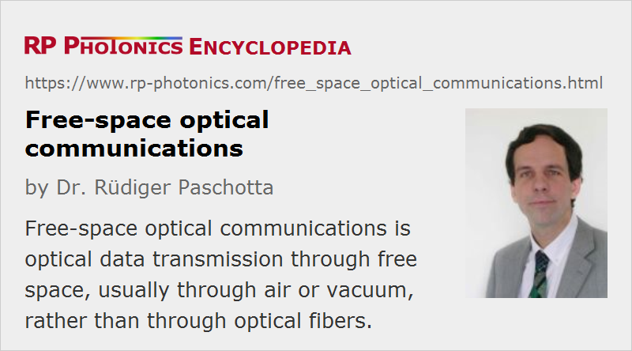

Free-space Optical Communications
Definition: optical data transmission through free space, usually through air or vacuum
More general terms: optical communications, optical data transmission
German: Freistahl-Kommunikation
Category: lightwave communications
How to cite the article; suggest additional literature
Author: Dr. Rüdiger Paschotta
Optical data transmission on Earth is in most cases done via optical fibers, because these allow the transmission over relatively large distances without excessive power losses, alignment issues, and disturbing influences of the atmosphere. However, it is also possible to transmit data optically via free space (or similarly, through water), not exploiting any kind of waveguide structure. This kind of optical communications has early origins, e.g. the “photo phone” patent by Alexander Graham Bell in the 1870s and the optical telegraph and is now increasingly used, both in space and on Earth. Usually, it requires an unobstructed line of sight between sender and receiver, and normally also some special free-space optics such as telescopes. The light source used is nowadays virtually always some kind of laser (possibly combined with an amplifier), because the high directionality of a laser beam is obviously a vital ingredient for high-performance communications. The prominent role of a laser is emphasized by the term laser communications.
Transmission Issues
Particularly for large transmission distances, it is essential to direct the energy of the sender accurately in the form of a well-collimated laser beam in order to limit the often still very large loss of power between the sender and the receiver. In order to limit the beam divergence, it is necessary to arrange for a large beam radius from an optical source with high beam quality. Ideally, one uses a diffraction-limited source and a large high-quality optical telescope for collimating a large beam. Due to the short wavelength of light, the beam divergence of an optical transmitter can be much smaller than that of a radio or microwave source of similar size. Using a frequently used term in the area of radio transmission, the antenna gain of an optical telescope can be very high – well over 100 dB even for moderate telescope diameters of e.g. 25 cm – and thus much higher than for any microwave antenna of limited size.
It is also advantageous to have a high directionality on the side of the receiver: it is essential not only to collect as much of the sender's power as possible, but also to minimize disturbing influences, e.g. from background light, which introduces noise and thus reduces the data transmission capacity. Both high sensitivity and high directionality can be achieved by using a large telescope at the receiver end.
Of course, high directionality also requires high precision in the alignment of the sender and receiver. It may then be necessary to stabilize the alignment with an automatic feedback system. For ground-based receivers of signals from remote satellites (see below), it is considered to use adaptive optics to increase the directionality further by reducing the influence of atmospheric disturbances.
An important issue is the power budget of a free-space link, including the transmitter's power and all power losses. The remaining power at the receiver largely determines the possible data transmission rate, even though this is also influenced by the modulation format, the acceptable bit error rate, and various noise sources, in particular laser noise, amplifier noise, excess noise in the receiver (e.g. an avalanche photodiode), and background light. The latter can often be efficiently suppressed with additional narrow-band optical filters, since the optical bandwidth of the signal is fairly limited, whereas background light is usually very broadband.
Severe challenges can arise from the effects of atmospheric disturbances such as clouds, dust and fog, which can cause not only strong signal attenuation but also intersymbol interference. To solve this problem, sophisticated techniques of digital signal processing have been developed, which amazingly allow for reliable high-capacity optical links even through thick clouds.
Space Applications
Some space applications require large amount of data to be transferred. An examples is the transmission between different Earth-orbiting satellites (inter-satellite communications), which was first demonstrated by ESA in 2001 (ESA). It is possible to transmit tens of megabits per second or more over many thousands of kilometers, using moderate laser average powers of the order of a few watts.
Data can also be exchanged between a more remote spacecraft and a station on or near Earth. For example, planetary probes can generate a lot of image data, and a major challenge is to send large amount of data back to Earth. Until recently, radio links operating e.g. in the X band or Ka band were the only available technology. Currently, optical data links are considered particularly for the downlink, where the desired data volumes are much larger than for the uplink, and optical communications could greatly expand the transmission capacity to hundreds of kbit or even several megabits per second. The spacecraft then has a pulsed laser source (employing pulse position modulation, for example) and an optical telescope of moderate size targeting the receiver. The latter can be a large ground-based telescope or a transceiver in an Earth orbit.
The basic advantage of optical technology over radio links is that the much shorter wavelength allows for a much more directional sending and receiving of information, resulting in much lower power requirements and higher data rates. In technical terms, the antenna gain can be much higher. This is particularly important for bridging interplanetary distances. On the other hand, optical links are more sensitive to weather conditions.
Short-range Free-space Optical Data Links
Technologically much less challenging are data links between metropolitan buildings (LAN-to-LAN connections), where a free-space laser data link over distances of hundreds of meters or even over a few kilometers can be much simpler and more cost-effective to install than any kind of cable, particularly if a road or some other kind of barrier has to be crossed, or if a connection is required for only a limited time. It is then possible e.g. to obtain fast Internet access for all buildings involved, even if only one of them has direct access to a fiber network.
The laser powers required are very moderate, as a significant fraction of the sent power can hit the receiver (e.g. a photodiode). Therefore, there are usually no significant laser safety issues, particularly if eye-safe lasers emitting in the 1.5-μm spectral region are used. However, the availability of services is smaller than with a cable, because the link may be disturbed either by atmospheric influences (e.g. heavy rain, fog, snow, or strong wind) or by flying objects such as birds. In this respect, free-space transmission is less robust than other wireless technologies such as radio links, but it has a higher potential for transmission capacity, is immune against electromagnetic interference, and does not raise concerns in the context of electro-smog. Also, it does not lead to interference between different data links, so it does not need a license to be operated, and it is superior in terms of data security, since it is more difficult to intercept a tightly collimated laser beam than a radio link. Finally, the reliability can be enhanced in various ways, e.g. with multibeam architectures, larger power margins, and backup systems, and the security can be extremely high with certain schemes of quantum cryptography.
For not too long distances (e.g., up to a few kilometers) and moderate data rates, one does not even require a laser transmitter, because light-emitting diodes (LEDs) can be used instead. However, high performance requires laser transmitter; transmission capacities can then be above 1 Tbit/s.
It is even possible to establish short-range optical data connections without a direct line of sight. When ultraviolet light is used, this is strongly scattered in the atmosphere, and it is possible to receive some of that light. That technology has become more interesting with the advent of light-emitting diodes (LEDs) emitting in the deep UV (UV-C), and also of suitable semiconductor photodetectors.
Essential advantages of laser data links over radio frequency (RF) or microwave links are the possible high data rate, low power requirements, compact size and lower probability of signal interception by unauthorized parties. Also, there is no need for governmental frequency assignment and no risk of mutual interference of different laser data links.
Suppliers
The RP Photonics Buyer's Guide contains 8 suppliers for free-space optical communication systems. Among them:
Questions and Comments from Users
Here you can submit questions and comments. As far as they get accepted by the author, they will appear above this paragraph together with the author’s answer. The author will decide on acceptance based on certain criteria. Essentially, the issue must be of sufficiently broad interest.
Please do not enter personal data here; we would otherwise delete it soon. (See also our privacy declaration.) If you wish to receive personal feedback or consultancy from the author, please contact him e.g. via e-mail.
By submitting the information, you give your consent to the potential publication of your inputs on our website according to our rules. (If you later retract your consent, we will delete those inputs.) As your inputs are first reviewed by the author, they may be published with some delay.
Bibliography
| [1] | V. W. S. Chan, “Optical space communications”, J. Sel. Top. Quantum Electron. 6 (6), 959 (2000), doi:10.1109/2944.902144 |
| [2] | “A world first: data transmission between European satellites using laser light”, http://www.esa.int/esaCP/ESASGBZ84UC_index_0.html, with SILEX system on board ESA's Artemis satellite, together with low Earth orbit remote sensing satellite SPOT 4 |
| [3] | The Jupiter Icy Moons Orbiter (JIMO) project, http://en.wikipedia.org/wiki/Jupiter_Icy_Moons_Orbiter (this would have used an optical link from Jupiter to earth but has lost funding in 2005) |
| [4] | D. O. Caplan, “Laser communication transmitter and receiver design”, J. Opt. Fiber Commun. Rep. 4, 225 (2007), doi:10.1007/s10297-006-0079-z |
| [5] | K. F. Büchter et al., “All-optical Ti:PPLN wavelength conversion modules for free-space optical transmission links in the mid-infrared”, Opt. Lett. 34 (4), 470 (2009), doi:10.1364/OL.34.000470 |
| [6] | S. Koenig et al., “Wireless sub-THz communication system with high data rate”, Nature Photon. 7, 977 (2013), doi:10.1038/nphoton.2013.275 |
| [7] | F. Feng, “Free space communications with beam steering a two-electrode tapered laser diode using liquid-crystal SLM”, J. Lightwave Technol. 31 (12), 2001 (2013), doi:10.1109/JLT.2013.2262372 |
See also: optical data transmission, quantum cryptography, The Photonics Spotlight 2009-11-13
and other articles in the category lightwave communications
|  |
If you like this page, please share the link with your friends and colleagues, e.g. via social media:
These sharing buttons are implemented in a privacy-friendly way!